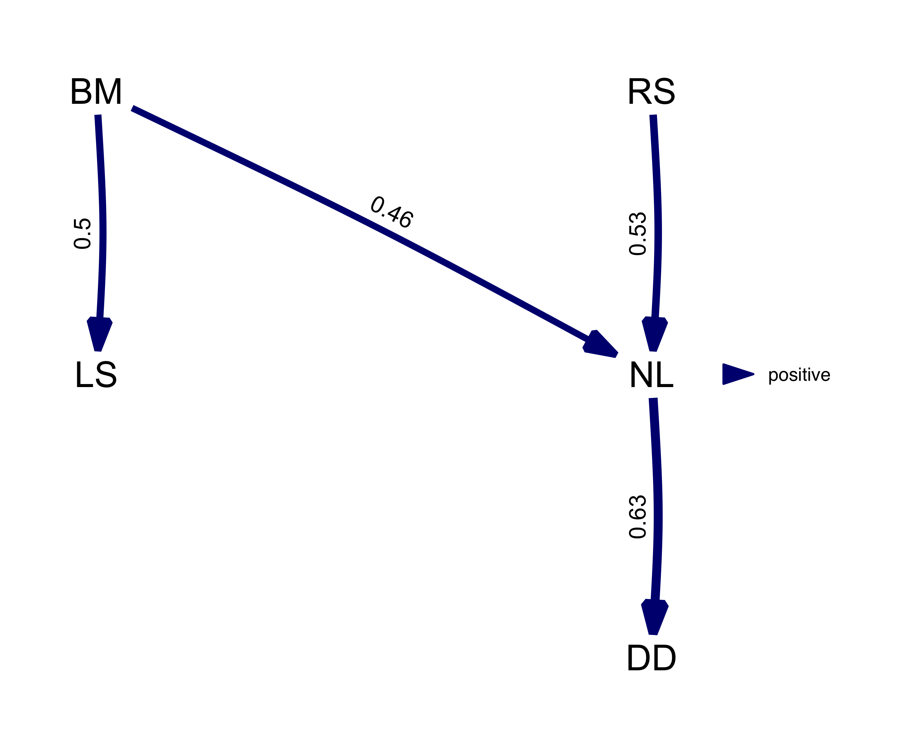

Introduction to phylogenetic path analysis with phylopath
Wouter van der Bijl
2017-07-07
Some starting notes
If you are unfamiliar with phylogenetic comparative methods in general, I’d advise you learn more simple methods first. If you are comfortable with phylogenetic methods, but not with phylogenetic path analysis (PPA) in particular, you should have a look at the example below together with the wonderful book chapter by Gonzalez-Voyer and Von Hardenberg.
This package follows the general approach to phylogenetic methods as used by the package ape (nlme::gls and ape are also used “under the hood”). This means in particular that you line up your phylogenetic tree and data by assigning the tip labels as the row names of your data.frame. (Please note that this is different from the approach of caper::pgls where you create a comparative data object.)
This also means that you use the correlation function from ape, by default corPagel, to supply the model of evolution. corPagel in particular estimates lambda without constraints (so it can be smaller than 0), and results can therefore be different from analysis using caper (which constrains lambda between 0 and 1).
phylopath makes it’s best attempt at helping users out with their data and tree. That means in particular that:
- an informative error is raised when you have species (rownames) in your data that are not in the tree,
- that
NAvalues are filtered out of the data as necessary, with an informative message, and - that the tree will be pruned for you if it has surplus species, with an informative message.
An example analysis
Below I recreate the phylogenetic path analysis described in:
Gonzalez-Voyer A & von Hardenberg A. 2014. An Introduction to Phylogenetic Path Analysis. Chapter 8. In: Garamszegi LZ (ed.), Modern Phylogenetic Comparative Methods and Their Application in Evolutionary Biology. pp. 201-229. Springer-Verlag Berlin Heidelberg.
You can find this book chapter online. For an introduction to the methodology, as well as the data, see the wonderful book chapter.
Specifically, we recreate the Rhinogrades example here. The data used has been included in this package.
Following figure 8.7, we first create all 9 causal models using the DAG function. This function uses regression equations (or formulas) to express the hypothesized relationships in the models. The easiest way to create this is by taking each node (a variable), putting it on the left-hand side of a tilde (~), and putting its causal parents on the right-hand side.
Note: any unconnected nodes can be added using var ~ var, but we won’t be needing that for this example.
library(phylopath)
models <- list(
one = DAG(LS ~ BM, NL ~ BM, DD ~ NL, RS ~ DD),
two = DAG(LS ~ BM, NL ~ BM, DD ~ NL, RS ~ LS + DD),
three = DAG(LS ~ BM, NL ~ BM, DD ~ NL, RS ~ NL),
four = DAG(LS ~ BM, NL ~ BM, DD ~ NL, RS ~ BM + NL),
five = DAG(LS ~ BM, NL ~ BM, DD ~ NL, RS ~ BM + NL + DD),
six = DAG(LS ~ BM, NL ~ BM + RS, DD ~ NL, RS ~ BM),
seven = DAG(LS ~ BM, NL ~ BM + RS, DD ~ NL, RS ~ LS + BM),
eight = DAG(LS ~ BM, NL ~ BM + RS, DD ~ NL),
nine = DAG(LS ~ BM, NL ~ BM + RS, DD ~ NL, RS ~ LS)
)The DAG function simply produces a matrix that summarizes the connections between the variables.
models$one## BM NL DD RS LS
## BM 0 1 0 0 1
## NL 0 0 1 0 0
## DD 0 0 0 1 0
## RS 0 0 0 0 0
## LS 0 0 0 0 0
## attr(,"class")
## [1] "matrix" "DAG"Note that the models are of class matrix as well as of class DAG. This means we can have special DAG methods.
For example, it is good to check if the DAG looks like you were expecting. Simply plot one of the models to inspect it visually.
plot(models$one)Or we can plot all of the models at once:
plot_model_set(models)Now that we have the models, we can perform the path analysis using the phylo_path function. For this we will need a data set, included in this package as rhino, as well as a phylogenetic tree, rhino_tree.
Importantly, when using PGLS, we need to be consistent in which variables are used as independent and dependent variables in the analysis. If one has a specific idea about which variables are to be conscidered as up- and down-stream, then you can use the order argument to give the ordering (from up to down). In this case, we supply the ordering to mimic the choices made by the chapter authors. Alternatively, you can choose to not supply an order, and the function will try to make a sensible order by itself. If the combination of all causal models is itself a DAG, the ordering of that model will be used, otherwise the ordering will be constructed by consensus (i.e. the most common ordering is chosen).
Generally, I advise to not supply the order argument, in order to reduce “reseacher degrees of freedom”.
By default, phylo_path uses Pagel’s “lambda” correlation structure (ape::corPagel), but if you want, for example, to use a simple Brownian motion model, you can supply ape::corBrownian instead.
result <- phylo_path(models, data = rhino, tree = rhino_tree,
order = c('BM', 'NL', 'DD', 'LS', 'RS'))The result we end up with is a phylo_path object. Simply printing it gives us a quick summary of what is in the object.
result##
## A phylogenetic path analysis
##
## Evaluated for these models: one two three four five six seven eight nine
##
## Containing 46 phylogenetic regressions.To get an overview of the analysis, we can ask for its summary:
summary(result)## model k q C p CICc delta_CICc l w
## 1 eight 6 9 8.200 0.769 28.200 0.000 1.000 0.324
## 2 six 5 10 6.653 0.758 29.125 0.924 0.630 0.204
## 3 four 5 10 6.761 0.748 29.233 1.032 0.597 0.193
## 4 nine 5 10 7.903 0.638 30.375 2.174 0.337 0.109
## 5 five 4 11 5.447 0.709 30.447 2.247 0.325 0.105
## 6 seven 4 11 6.457 0.596 31.457 3.257 0.196 0.064
## 7 three 6 9 29.490 0.003 49.490 21.290 0.000 0.000
## 8 one 6 9 64.371 0.000 84.371 56.171 0.000 0.000
## 9 two 5 10 63.386 0.000 85.858 57.657 0.000 0.000The ranking of the models obtained here is identical as the worked example in the book chapter. The estimates differ slightly however, since we are using nlme::gls whereas the chapter was using caper::pgls. (Specifically, the differences are due to gls and pgls estimating the lambda parameter slightly differently. Also there is one or two small mistakes in the book chapter analysis.)
To view the best ranked model, we can use best. This returns a DAG with standardized regression coefficients, as well matrices of standard errors and confidence intervals. These can be obtained for any particular model we looked at by using the choice function.
(best_model <- best(result))## $coef
## RS BM NL DD LS
## RS 0 0 0.5272990 0.0000000 0.0000000
## BM 0 0 0.4623828 0.0000000 0.4988607
## NL 0 0 0.0000000 0.6206986 0.0000000
## DD 0 0 0.0000000 0.0000000 0.0000000
## LS 0 0 0.0000000 0.0000000 0.0000000
##
## $se
## RS BM NL DD LS
## RS 0 0 0.05721587 0.00000000 0.00000000
## BM 0 0 0.06510549 0.00000000 0.08954569
## NL 0 0 0.00000000 0.08116661 0.00000000
## DD 0 0 0.00000000 0.00000000 0.00000000
## LS 0 0 0.00000000 0.00000000 0.00000000
##
## $lower
## RS BM NL DD LS
## RS 0 0 0.4137414 0.0000000 0.0000000
## BM 0 0 0.3331664 0.0000000 0.3211602
## NL 0 0 0.0000000 0.4596261 0.0000000
## DD 0 0 0.0000000 0.0000000 0.0000000
## LS 0 0 0.0000000 0.0000000 0.0000000
##
## $upper
## RS BM NL DD LS
## RS 0 0 0.6408567 0.0000000 0.0000000
## BM 0 0 0.5915991 0.0000000 0.6765612
## NL 0 0 0.0000000 0.7817711 0.0000000
## DD 0 0 0.0000000 0.0000000 0.0000000
## LS 0 0 0.0000000 0.0000000 0.0000000
##
## attr(,"class")
## [1] "fitted_DAG"This object can also be plotted, now the numbers and width of the arrow represent path coefficients. In this case, all paths are green since all relationships are positive.
plot(best_model)From the summary we could see that in reality, there are several models that are quite good. Instead of using the best model, we can use the average of the best models, weigted by their relative evidence. By simply calling average, we can obtain the coefficients and standard errors of the averaged model where the CICc cut_off is 2 by default. If a model does not include a path, we assume that coefficient to be 0.
average_model <- average(result)
plot(average_model, algorithm = 'mds', curvature = 0.1) # increase the curvature to avoid overlapping edgesNote that, by default, the path averaging is only done for the models that actually contain that path. This facilitates the detection of weak effects, but also biases coefficients away from zero. Alternatively, we can assume the coefficients (and their variance) for absent paths to be zero by setting method = "full".
average_model_full <- average(result, method = "full")
plot(average_model_full, algorithm = 'mds', curvature = 0.1)
We can see that paths that occur in all the best models, such as NL -> DD, are not effected. But paths that occur only in some models suffer shrinkage, reflecting the fact that they were not as well supported.
In this case in particular, the average model is actually not a DAG since it is cyclical and the relationship between RS and NL is clearly not well resolved by our analysis.
If one is interested in the confidence in the regression coefficients, coef_plot can visualize the estimates and their approximate confidence intervals. We can see that for the best model, the four paths are all well supported and of approximately equal strength. The order of the paths from left to right, attempts to follow the paths downstream, in this indicated by the order argument we gave the phylo_path function at the start.
coef_plot(best_model)This plot can be manipulated using ggplot2 functions, for example, to create a horizontal black-and-white version. We can see that for full average model, shrinkage has caused several paths to become uncertain.
coef_plot(average_model_full, reverse_order = TRUE) +
ggplot2::coord_flip() +
ggplot2::theme_bw()
Finally, you can access the conditional independencies and their associated p-values as well. This can be useful if you want to know why a certain model was rejected. The corStruct column gives us the estimates for the correlation structure for each of the fitted models, in this case lambda. Finally, all models are stored in the model list as well, in case other information needs to be extracted.
result$d_sep$one## # A tibble: 6 x 4
## d_sep p corStruct model
## <chr> <dbl> <dbl> <list>
## 1 DD ~ NL + BM 4.331253e-01 0.4333213 <S3: gls>
## 2 RS ~ DD + BM 2.296368e-01 0.5688327 <S3: gls>
## 3 RS ~ BM + DD + NL 4.911689e-13 0.6466858 <S3: gls>
## 4 LS ~ BM + NL 9.939375e-01 0.7429369 <S3: gls>
## 5 LS ~ NL + BM + DD 2.176122e-01 0.7766188 <S3: gls>
## 6 RS ~ DD + BM + LS 9.956174e-01 0.5715937 <S3: gls>For model 1 it seems that the third conditional independence statement was violated.